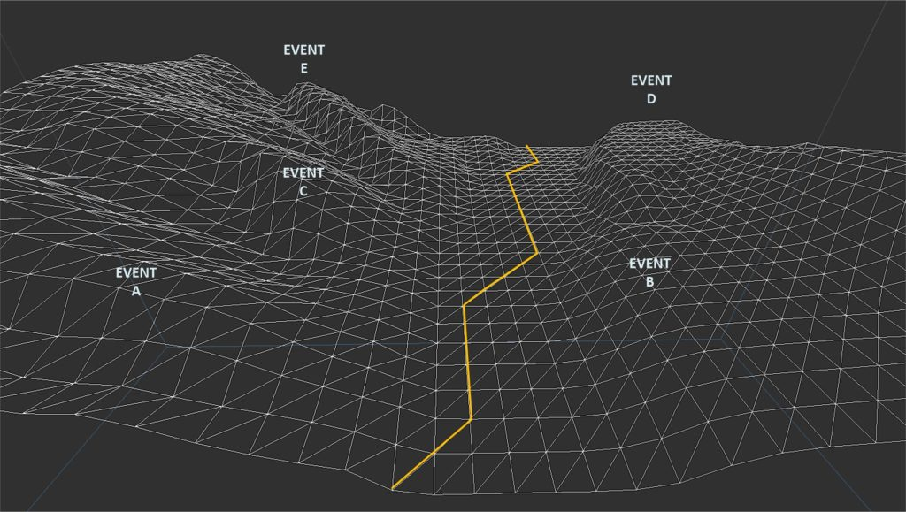
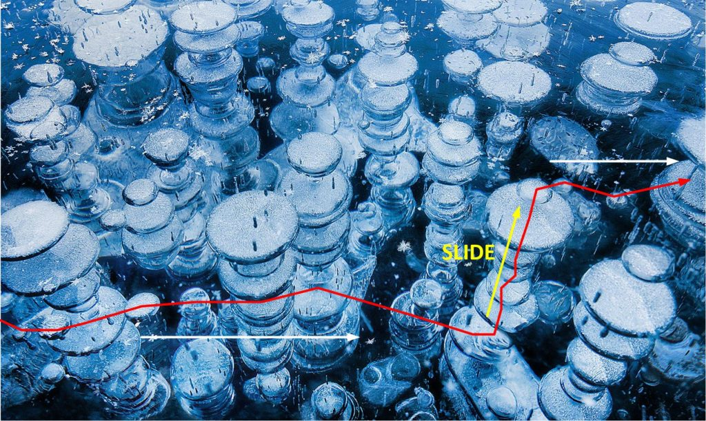
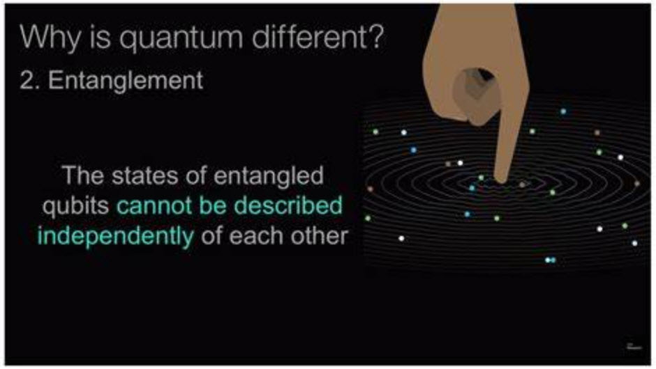
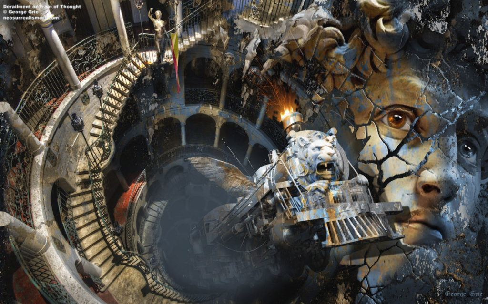

This is a MAJestic post. It fits somewhere in between “what is the nature of the universe” and “how thoughts can alter our reality”. This article focuses on the idea that when you are in a world-line you are pretty much “alone”. Everyone else are just “shadows” or “shadow people” that occupy the world-line that you inhabit. Here we are going to spend more time flushing out what “shadow people” are, and what you are when you are on a world-line.
We covered some of this material in other posts.
Here we are going to elaborate on some of the finer details to help provide a better picture of what is actually going on. And of course, this knowledge that I am transcribing to the MM audience is not the mainstream scientific understanding (at least as I understand it), but rather what the <redacted> benefactors that worked with us at MAJestic believe that it is.
You, being who you are, can take it or leave it, and even ignore this article. But I would argue that you need to pay attention as it will best describe how the universe actually works, in far better detail than anything currently available within conventional science.
I have simplified the way the universe works so that people can understand it. And this posts leaves the simplification to start getting to the intricacies of the entire system.
Quick Review – “Time”
We are consciousness. Not a physical being.
Our consciousness is part of something much larger. We refer to this “bigger” thing as a “soul”.
Everything that you know, experience and think derives from your consciousness.
This consciousness constantly moves.
It moves from a fixed (unchanging) world-line to another world-line. We move from one to the other, and we call this movement “time”.
“Time” is the movement of your consciousness from one world-line to another.
Quick Review- Properties of a world-line
Each world-line is static.
Meaning that nothing is moving. A “world-line” is a frozen moment in time.
And each world-line represents, not only a frozen moment in time, of what have happened in the past, but also what will happen in the future. As well as every single “what-if” world-lines no matter how trivial.
And while we consider them to be “world-lines”, they are actually a small frozen in place complete universe. With planets, galaxies, stars, and all sorts of things that we associate with “our reality”.
Quick Review – A Template
For our purposes, we can consider world-lines to occupy a “location” independent of time and space. Thus it is very difficult to associate them with any kinds of geometry. Never the less, these world-lines can be “stacked”, “arranged” or “associated” with others for purposes of invention. Meaning; These frozen world-lines can be arranged to provide a utility, or a purpose.
A “template” is an arrangement of world-lines.
The world-lines are set up so that it is easy for consciousness to move from one to another, and thus experience “time”. This arrangement has elements of intelligent design inherent in it.
Obviously, those world-lines that are most similar to each other are organized in close proximity. It is called a “template”.
Quick review – Pre-birth template
A “pre-birth” (world-line) Template is an arranged template.
It is referred to as a “pre-birth” template because the Soul created it (arranged it) prior to your consciousness entering the physical body on world-line number one.
It is an arrangement of world-lines with the intent on creating a (more or less) “default” path of least resistance for a (given specific) consciousness to travel through.
The consciousness, of course, can enter any world-lines that it’s thoughts desire. However, the pre-birth template defines the path of “least resistance” for the consciousness. This template is pre-arranged specifically for the consciousness to acquire specific experiences while it is part of a physical body.
This manifests in a very simple manner.
A person finds a $100 bill on the sidewalk. The default action, and the most likely response, is for the person to pick up the money and put it in his/her pocket. That is the adjacent world-line route upon the pre-birth template. It is the easy to implement world-line migration path that the consciousness would / should take. However, other options are available. These other options lie off that of the pre-birth world-line template. They can include... [1] Picking up the money, and lighting it on fire. [2] Picking it up and using it as toilet paper. [3] Ignoring the money. [4] Putting it in a Salvation Army donation canister. [5] Giving it to the neighborhood kids to play with.
For most consciousnesses, the easiest path – “the path of least resistance” – is the pre-birth template. The consciousness can take very little initiative, aside from following the conditions and situations presented to them, and experience life as defined by the template.
Following the path of least resistance on a pre-birth world-line template is to live a “fated life”.

Quick review – Slide
When you, as a consciousness, decide to do something out of the normal, something difficult or something extraordinary… you travel off the template. This travel, is automatic, and it appears that you “slide” off onto some other template.
A slide is when you exit the pre-birth world-line template and go to another template.

Quick review – Occupancy
99.99999% of world-lines are empty.
Meaning that all they are, are just full and populated with other people, animals and things without consciousness. And only YOU, the one who is moving, possesses any kind of consciousness.
These people, and animals, are referred to as “shadows” or Shadow people” because while they appear to move and think, they do not have a consciousness like you have.
They are the “what if” actions, and scenery that your consciousness interacts with.
And the basic reality of our reality and our universe is that most of our world-lines are empty of all other consciousnesses except for our own. And so to see what it looks like is pretty much like this…
And this is how I have been discussing world-line travel for some time now.
Well, that is not exactly correct.
In reality, all the “shadow people” possess a consciousness.
It’s not zero like I have stated.
That is an over-simplification.
There is some small percentage of a consciousness within every shadow entity. It’s just that the percentage is very, very tiny.
So, let’s take off the “training wheels”.
Every single one of the infinity of world-lines has consciousnesses throughout. Not just of everyone else, but also yours. It’s a tiny, tiny nearly infinitesimal amount. So what is ACTUALLY going on is that your consciousness dominates all the other consciousnesses in the world-line.
It’s like this…
Some explanations are necessary – How
In quantum physics, when two quanta meet, they become entangled.
Quantum Entanglement in Physics - ThoughtCo Quantum entanglement is one of the central principles of quantum physics, though it is also highly misunderstood.In short, quantum entanglement means that multiple particles are linked together in a way such that the measurement of one particle's quantum state determines the possible quantum states of the other particles. https://www.thoughtco.com/what-is-quantum-entanglement-2699355
And in the realm outside of our reality; the one that contains all the near-infinite numbers of world-lines, there isn’t any time or space. It’s a region with no geometry. So everything can entangle in a quantum sense.

Theoretically.
What is actually happening is that clusters of world-lines entangle with other clusters of world-lines. They do this when ever a consciousness is injected into a world-line template.
A soul injects a consciousness into a template, and them BOOM! A hundred trillion world-lines automatically get entangled.
This happens each time when a soul injects a consciousness.
This happens each time the consciousness enters and leaves world-lines, and life-lines (life-times).
And all of this entanglement puts a little infinitesimal part of you, and those around you near you in what ever world-line that your consciousness happens to occupy at that moment.
Now…
It should be understood that there are other factors that come into play. One injection of consciousness into a template does not mean that the entire infinite numbers of world-lines are all entangled. The effect does “peter out”, or decline as the variance increases.
In effect, and for our purposes, it will resemble something like this…
So lets consider this illustration.
You, as consciousness, are injected into a template by your soul. You have pre-arranged the template layout and "geometry" so that you will have a very interesting and special arrangement of experiences that your consciousness would enjoy. You, as consciousness, are injected into this template and immediately all the world-lines mapped out by your soul are now entangled. This effect ripples through all the world-lines... to a point. Certainly the world-lines where you are driving a car, and go through an intersection has your consciousness presence. But does the world-lines where you are a duck eating (what ever ducks eat) as well? No. That is very unlikely. As the degree of variance from your point of entry increases, so does the drop off of entanglement.You driving a car does not resemble a duck eating (what ever ducks eat).
Now…
Consider that this is happening for the billions upon billions of people that are entering and leaving our template surface. Each one is “making their marks”. Good or bad. Right or work. Strong or soft. All combine to provide some “foot print” of their present upon the template that you inhabit.
Explanations – why
You might want to know why this occurs this way. To which I must shrug my shoulders and respond that I really do not know. I suppose that if everyone was a full-on 100% consciousness inside their body, and if thoughts control our reality, then our reality could be come a very confusing mess of constantly changing realities.
By only having one dominant consciousness inside a world-line, the thoughts that navigate though the template path are clearer and easy to track.
Or inother worlds, if everyone within your world-line were operating their consciousness at 100%, like you…
…and thoughts create our reality, and navigate on and off world-lines and their associated templates…
…then…
,,,reality would be changing and moving far too rapidly. It would be very difficult to corral your personal thoughts into any kind of functional application. The “reality” would be a real mess.

How can we use this knowledge
There are many positives to understanding how the universe actually works. But I would guess that the greatest value comes from what you do with that knowledge personally. Once you realize that your consciousness is THE dominant consciousness in the world-line that you inhabit, that means that your thoughts are also the DOMINANT THOUGHTS in the world-line as well.
Thus the need to control your thoughts has never been greater.
Not only can we control our navigation, but our influence in the strong quantum entanglements of “near-by” (but untraveled) world-lines means that we have the potential to influence the trends and behaviors of the environment around us.
Which is why my role as a “dimensional anchor” was so important.
Turn off that “news”. You define what you want to happen in the world around you.
I suppose you can "skim" the headlines. But really forget about most of it. Most are lies and manipulations. If you are all caught up on 5G and brain damage, the dangers of vaccines, and the government plot to do this or that... ...you all need to start drinking alcohol more, and reading the computer less.
Have a “bad boss”? You can think him out of your influence cycle?
The nation going crazy? You can calm it down, make it stable and anchor it against the winds of the radicals.
Unsatisfied with your life? Think yourself a better one.
The path and the road lies a head of you. You have more control over it’s navigation than you are aware of. Turn off the criteria of what “happiness is”, or the need to “accumulate wealth to be happy”, or the idea of “you need to do this, or that”. The only one who knows what you need is YOU.
Control your thoughts, and you will control your mind. Control your mind, and you will navigate towards the life you want.
It’s all in your hands.